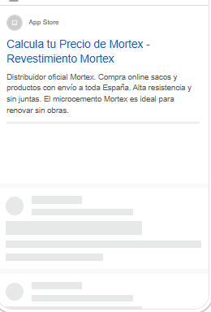

Publicidad en Google · Marca Mortex · Cierre de mes
Septiembre cierra con 17 contactos reales, ya centrados en tu zona.
Es el primer mes con la campaña limitada a Andalucía y Levante. Como anticipamos en agosto, hay menos contactos que cuando se anunciaba en toda España, y cada visita cuesta más. A cambio, el ritmo es muy estable: desde el cambio de zona entran tres contactos por formulario cada semana.
Septiembre de un vistazo
1.877
veces que se mostró tu anuncio
216
personas entraron en la web
17
contactos reales (formulario + WhatsApp)
196,25 €
invertidos en el mes
Han llegado 12 por el formulario y 5 por el WhatsApp de la web. Son 17 contactos en total, a 11,54 € de media.
Agosto frente a septiembre
Con el mismo presupuesto, la campaña ha pasado de anunciarse en toda España a hacerlo solo en tu zona. Así lo reflejan las cifras:
Agosto
Septiembre
Zona de la campaña
Toda España
Andalucía + Levante
Visitas a la web
300
216
Contactos por formulario
23
12
Contactos por WhatsApp
7
5
Coste por visita
0,65 €
0,91 €
Coste por contacto
6,46 €
11,54 €
Es el efecto esperable de concentrar el mismo presupuesto en una zona más pequeña: hay menos búsquedas disponibles y cada visita se disputa más. En la primera semana del mes, todavía con toda España, la visita costaba 0,61 €. Desde el cambio de zona, 1,04 €.
Contactos por formulario acumulados. Del 7 al 27 de septiembre entraron exactamente 3 cada semana. Los tres últimos días del mes (28 a 30) no hubo ninguno: lo vigilamos de cerca en octubre.
¿Se cumplió la previsión de agosto?
En el informe de agosto previmos unos 10 contactos en septiembre, todos de tu zona. Este es el resultado:
Previsto
Real
Contactos en el mes
~10
17
Formularios con obra en tu zona
Todos
6 de 9
En número de contactos, septiembre ha superado la previsión. Pero no todos son de tu zona. De los 9 formularios recibidos desde el cambio, 6 tienen la obra en Andalucía o Levante y 3 en Madrid. Google muestra el anuncio a quien está en la zona, no a quien tiene la obra en ella: alguien en Málaga que reforma un piso en Madrid ve tu anuncio. Por eso el filtro geográfico reduce los contactos de fuera, pero no los elimina del todo. Los 3 formularios de los días 1 a 6, todavía con toda España, vinieron de Pontevedra, Barcelona y Girona.
Dónde se generan las visitas
Visitas a la web en septiembre según dónde estaba la persona al buscar. La Comunidad Valenciana y Málaga concentran casi dos tercios de las visitas dentro de tu zona:
Comunidad Valenciana
63
Málaga
35
Sevilla
19
Granada
12
Resto de Andalucía y Murcia
29
Resto de España (1–6 sep)
58
Las 58 visitas de fuera de zona son de la primera semana, antes del cambio. Desde el 7 de septiembre, prácticamente todas las visitas llegan desde Andalucía y Levante: 149 de 150.
Más presencia frente a la competencia
De todas las búsquedas en las que tu anuncio podía aparecer, este es el porcentaje en el que apareció realmente:
Agosto · toda España
26 %
Septiembre · Andalucía + Levante
36 %
Al concentrar el presupuesto, tu anuncio aparece en más búsquedas de tu zona. Además, cuando aparece, lo hace en la parte superior de la página el 66 % de las veces. Los otros anunciantes que pujan por estas búsquedas son BEAL (el propio fabricante de Mortex) y Epodex (otro fabricante de microcemento), que ha empezado a anunciarse este mes.
Así se ven tus anuncios en Google
Los anuncios no han cambiado este mes. Esto es lo que ve una persona en su móvil cuando busca «mortex», «microcemento» o «mortero de cal»:
Microcemento Mortex · Precio m² Con botón de llamada directa.Llamada
Comprar Mortex Online · Saco 25 kg Enfocado a la venta del producto.Llamada
Calcula tu Precio de Mortex Distribuidor oficial, envío a toda España.Llamada
Microcemento Mortex · Suelos «Renovar sin obras» como gancho.Llamada

Revestimiento Mortex Otra combinación de titulares que prueba Google.Variante
Micromortero Mortex Oficial Aquí aparece el botón de WhatsApp.WhatsApp
Mortex Precio por Saco Con enlaces extra a otras páginas de la web.Enlaces + Llamada
El recorrido: de una búsqueda a un contacto
Así se estrecha el «embudo» de la campaña. Estos son los números reales de septiembre:
1.877
veces que apareció el anuncio
↓ 12 de cada 100 hacen clic y entran en la web
216
visitas a la web
↓ 8 de cada 100 visitas contactan (formulario o WhatsApp)
17
contactos reales
La proporción de personas que hacen clic se mantiene como en agosto. La de visitas que acaban contactando baja de 10 a 8 de cada 100.
Cómo contamos los contactos
Como cada mes, cruzamos lo que registra Google con los envíos reales del formulario, uno a uno. Este mes Google se ha quedado corto:
Contaba Google
Reales
Contactos de formulario
8
12
Contactos por WhatsApp
5
5
Google no registra a las personas que rechazan las cookies de la web, y por eso cuenta menos formularios de los que llegan. Los 12 reales son personas distintas: hemos descartado un envío duplicado y las pruebas técnicas. En total, 17 contactos reales en septiembre.
Quiénes son esos contactos
Este es el perfil de los 12 contactos del formulario. Todos tienen un proyecto concreto detrás:
Destacan una arquitecta con una rehabilitación de 130 m² (suelos y dos baños), un interiorista, un obrador de panadería de 800 m² y varias reformas de 100 m² o más, entre ellas terraza con piscina y suelos de vivienda completa. Dos contactos son residentes extranjeros: uno en Cádiz que escribió en inglés y otro en Benissa (Alicante).
Previsión para octubre
Octubre será el primer mes completo con la campaña en Andalucía y Levante desde el día 1. Si se mantiene el ritmo de septiembre:
12–14
contactos por formulario previstos
+ WhatsApp
en septiembre fueron 5
~200 €
mismo presupuesto
Es una previsión prudente, basada en los 3 contactos por semana que ha mantenido la campaña desde el cambio de zona. Puede bajar si el coste por visita sigue subiendo como en los últimos días de septiembre.
Qué hacemos ahora
01
Dejar de pagar búsquedas que no son de Mortex
Tu anuncio también aparece cuando alguien busca otras marcas (Cumen, Weber, Topciment…) o morteros para fachada, y algunas de esas búsquedas acaban en visita. Las excluimos para que el presupuesto se centre en quien busca Mortex o una alternativa al microcemento.
02
Decidir qué hacer con las obras de fuera
Seguirán llegando algunos contactos con la obra fuera de tu zona, sobre todo de Madrid. Como envías producto a toda España, te proponemos atenderlos como venta de material aunque no puedas ofrecer la aplicación.
03
Valorar anuncios en inglés
Hay búsquedas de Mortex en inglés, francés y neerlandés, y dos contactos de residentes extranjeros. En la Costa del Sol y en Alicante es un público con presupuesto de reforma. Podríamos probar un anuncio en inglés sin aumentar la inversión.
Próxima revisión: primeros de noviembre, con el primer mes completo en Andalucía y Levante.